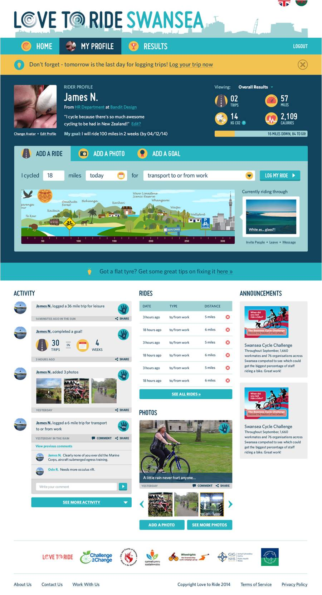

Tools Used
- Building Motivation Over Time
- Feedback
- Norm Appeals
- Obtaining a Commitment
- Overcoming Specific Barriers
- Prompts
- Peer Support Groups
- Work Programs that Influence the Home
Initiated By
Love to Ride
Partners
Local Municipalities
Results
- In 2013, Love to Ride had 113,000 participants, 34,400 of whom were originally non-cyclists.
- After three months, 54% of self-identified non-cyclists had cycled at least once a month and 35% cycled to work at least once a week
- 3,200 companies involved
- Case Study (PDF format)
- Webinar Transcript
Landmark Case Study
Love to Ride
Love to Ride provides tailored resources and support for increasing commuter cycling, staff fitness, and reducing traffic congestion at work. It uses 'stage of change' to segment participants and cost-effectively tailor communications to them, helping them move along a personal journey of change. A web-based platform and GPS app reach people through their computers, cell phones and tablets, with tailored and timely information. Originally developed in New Zealand, Love to Ride has now been replicated in continental Europe, the UK, US and Australia. It was designated a Landmark case study in 2014.
Background
The idea behind Love to Ride was originally developed in New Zealand as a part of a national health promotion strategy that included sustainable transportation. Thomas Stokell worked on the cycling strategy, then later developed Challenge for Change when he moved to the UK. Challenge for Change was then rebranded as Love to Ride.
Between 2007 and 2014, Love to Ride delivered 120 Workplace Cycle Challenge programs and encouraged more than 110,000 people and 3,000 businesses to participate. It was effective in encouraging 34,000+ non-cyclists to try cycling and see how easy and fun it can be.
“That was very much our mission—to get more people riding bikes,” said Stokell. “Love to Ride brought all our work under one cool, fun umbrella and spread the love of riding.”
Setting Objectives
The main objectives of the programme were as follows:
- Encourage more people to take up cycling
- Encourage people who are already cycling to cycle more often
- Encourage people to cycle for transportation purposes (first in their communities, then eventually to work).
Getting Informed
Love to Ride studied how leading behaviour change theories could be applied to cycling. These theories included: the Fogg Behaviour Model (behavior = motivation, ability, trigger); gamification theory; the use of reinforcement and incentives; social norming; and making the change process easy, popular and fun.
Love to Ride worked with four central principles.
- Understand the user journey, from non-cyclist to regular cyclist, eventually biking to work
- Identify and address key barriers and benefits
- Monitor
- Make it fun and self-reinforcing through technology
Based on Stages of Change Theory and its prior experience, six stages of change were recognized as follows.
- Pre-contemplation (Non-cyclist): not riding and not considering participation in the program
- Contemplation (Non- cyclist): not riding yet, but considering participation in the program
- Preparation (Non- cyclist): not riding yet, but had joined our program
- Occasional cyclist - cycled occasionally for errands and/or recreation
- Regular cyclist - cycled regularly for errands and/or recreation
- Regular commuter - cycled regularly to work
Love to Ride collected information about participants’ barriers, benefits and stages of change on an ongoing basis, as new people registered on the Love to Ride website. The brief registration / baseline survey asked them how often they currently rode, what barriers they faced and what benefits they wanted to gain from cycling, as will be described in further details below.
Identifying motivators and barriers
The most common benefits and motivators identified by survey participants were that cycling was an enjoyable, healthy activity that improved fitness, and that it saved time and money.
The barriers depended on the stage of change. For example, a self-identified non-cyclist might not have the money to buy a bike, or not know what type of bike to buy; an occasional cyclist might not know the best bike routes to take to work, or how to maintain or fix their bike. Barriers for many also included not having a place to shower, or to safely park their bike once they arrived at work.

Non-cyclists might not have the money to buy a bike or not know what type of bike to buy, or their bike may be buried in the shed or be in poor repair.
Delivering the Program
Love to Ride provided a web platform and GPS app that made it fun and easy to participate in the program, with plenty of recognition and personalized invitations for taking next steps. It also organized workplace Cycle Challenges.
Love to Ride website, smartphone apps and e-communications automatically tailored information to participants that addressed their motivators and helped them overcome their barriers.
Workplace Cycle Challenge
The Workplace Cycle Challenges, were three-week challenges to get more people to cycle more often and to work. Challenge scores were based on participation, not the distance cycled.
Stokell explained that distance-based challenges tend to motivate existing and regular riders, but not other categories of cyclists. (Challenges)
“If you just tell people to ride to work because it’s good for them, the environment, and that they’ll save money, they will just list all the reasons they can’t,” said Stokell. “Instead of asking them to climb a mountain, we asked them to take a small, first step: ride a bike for just 10 minutes.”
Love to Ride worked with cities and stakeholder organizations in those cities to engage local businesses to participate in the Challenge.
Registered businesses were divided by size so that companies competed against similarly-sized companies; employees within those companies then registered as part of their workplace. (Obtaining a commitment)
“We asked each company to select its own team champions and then we provided them with posters and draft texts that they could e-mail out to their colleagues and mention in staff meetings.” Love to Ride also phoned the team champions with tips and ideas for engaging their colleagues. (Building Motivation and Engagement Over Time)
Segmenting the Audience
Love to Ride’s use of personalized web-based communications was, as one Landmark panellist put it “similar to the sophistication of online advertisers.” The program’s website, smart phone apps and e-communications automatically tailored messaging so that participants got the prompts and heard about the rewards, incentives and prizes that would most appeal to them and most help them overcome their particular barriers. (Incentives; Building Motivation and Engagement over Time, Overcoming Specific Barriers; Prompts; Vivid, Personalized, Empowering Communication)
.png)

Each time participants registered for the program, they indicated what stage they were at. Participants were also asked to check off their own barriers and benefits; the survey options they got to choose from were determined by the stage they said they were at.
Participants were encouraged to fill in an online trip log. Whenever they logged their trips, they received a personalized pop-up message with fun and interesting facts or reminders. For example, if a cyclist regularly used a busy road to ride to work, the system could generate safety tips or links to videos that showed how to safely ride in traffic. People received special messages when they reached their goals and could also ‘high five’ others when they reached theirs. (Feedback)

The system showed participants how they were doing, both numerically and using a journey image. It also recognized success, encouraged participants to recognize each other’s contributions, developed team spirit, and linked to sponsor / local events.
As another example, since those who rode only occasionally might not know how to change a flat tire and maintain their bikes, the system encouraged them to watch a brief video on how to do it. These videos were available on handheld computers and tablets too – which could be taken right to the bicycle when doing the repairs. The program also connected participants with local bicycle maintenance workshops and discounts on bike servicing. (Overcoming Specific Barriers)
“We asked different questions of the regular cyclists, questions that we used to help them encourage their colleagues,” explained Stokell. Depending on their responses, follow up questions were sent. “This got them to make a small commitment and identified a next step as well.” (Building Motivation over Time, Obtaining a Commitment)
Other messages encouraged regular cyclists to offer to ride with a non-cyclist or occasional cyclist, lend a bicycle to someone who wanted to give it a try, help their department or company compete against another, etc. (Norm Appeals, Peer Support, Word of Mouth)
Tailored messages also provided participants with the best cycling routes, safety information (if the weather was bad that day in London, England, the system reminded participants about how to cycle safely in the rain), bicycle repair and maintenance tips, or offered discounts at local shops.
The next illustration provides a “behind the scenes” perspective on the system from the system’s administrative or “back end”. You can see the entry page that program managers used to customize prompts and other messages so they were automatically targeted at those who indicated different stages, motivators and benefits, and who are at different program locations or using different languages. The system provided some global, standardized messages that could quickly and easily be taken to scale, as well as the ability to easily create new messages for specific groups and locations.

Monitoring, feedback and “next step” messages could be set up to reach specified groups of participants at specified intervals. When non-cyclists said they didn’t own a bike, for example, Love to Ride later asked whether or not they’d bought a bike. If they answered yes, they’d get a response such as ‘That’s great. Happy riding!’ If they answered no, they might receive information about a local bicycle shop. (Building Motivation over Time, Feedback, Prompts)
Financing the Program
Love to Ride was a fee-based social enterprise, set up as a business with a social mission. It offered varying levels of service. “We wanted to make Love to Ride available for organizations of different budgets,” said Stokell.
A key variable was how “do-it-yourself” (DIY) a participating community wanted to be. For example, did it just need to use the platform and some guidance on how to use it? Or did the community also want to hire a contractor to run the Workplace Cycle Challenge? At the higher end of the spectrum, Love to Ride was doing a project in Sydney, Australia in 2015 involving 200 companies, 5,000 people and 1,500 new riders. Sydney needed to get more people in a particular area on bikes fairly quickly, before a light rail construction slowed down local traffic. That was about an $US 80,000 project. However, $2,000 to $4,000 provided the platform (only) for smaller cities or regions that did not require further support.
Measuring Achievements
For the Workplace Cycle Challenges, percentage uptake was measured, rather than distance covered, as well as cycling frequency, journey type and other key data.
Organizers used short, high-response surveys to measure program effectiveness to assess uptake:
- Participants were first surveyed when they registered (baseline)
- They self-reported their participation throughout both the Challenge lead-in and Challenge activity periods
- They received short follow-up surveys three weeks and again at three months after the Challenge.
Results
Of the 113,000 Workplace Cycle Challenge participants in September 2014, 30% were non-cyclists, 19% were occasional cyclists and 51% were regular cyclists.
The three-month survey results showed that:
- 54% of those who were non-cyclists at baseline, were cycling at least once a month, and 35% of them were cycling to work at least once a week
- 42% of those who were occasional-cyclists at baseline were now cycling regularly, and 24% were commuting by bike regularly (increased from 1-4 times a month to 2-5 days a week)
- 28% of driving commuters were driving to work at least two days fewer per week
- Three months after the Challenge, about 8% of those who had tended to drive to work said that they cycled to work more than they commuted by car. In some locations this figure was as high as 17%.
Longer Term Impacts
For the 2011 Workplace Cycle Challenge in York, England, 292 non-cyclists registered. At the start of the 2012 Challenge, 83 of them had re-registered; 20% of these registrants had been cycling occasionally and 27% had been cycling regularly. At the start of the 2013 Challenge, 39 of them had registered again; of these registrants, 28% had been cycling occasionally and 31% had been cycling regularly.
Overall Impacts
A typical Workplace Cycle Challenge involved between 600 and 3,000 people. On average, 30% of the participants were non-cyclists; three months after the program, an average of 82% of those non-cyclists were still cycling (54% weekly). On average, about one-quarter of all participants became new riders.
Between 2013 and 2014, 1.1 million trips and 11.8 million miles cycled were logged. Estimated emission reductions totaled about 1,550 tonnes.
Contacts
Thomas Stockell
Love to Ride
thomas@lovetoride.net
1 310 906 7897
Sam Robinson
Love to Ride
sam@lovetoride.net
+447734 833451
Website: www.lovetoride.org
Notes
Lessons Learned
Segmentation by Stage of Change
For transportation-related behaviors, stage of change / current travel habits can be a helpful way to segment one’s audience.
Barriers are different at each stage
For cycling promotion, the barriers tend to be different at each stage, so different interventions are needed for each group.
Automated personalization
Web-based communications are making it increasingly practical to personalize communications
A focus on participation
The Workplace Cycle Challenge invited businesses in a participating city to compete against each other to see which could encourage the most staff to ride a bike for just 10 minutes.
Measuring percentage uptake, rather than distance covered, made the Challenge more open and appealing to new cyclists and helped to motivate regular cyclists to encourage their non-cycling colleagues. It showed that riding was a fun, enjoyable activity for everyone, not just a few people.
Baby steps
Stokell said that it’s critical to break down a big behaviour change into smaller steps.
“Giving people a fun 10-minute cycling experience can quickly break down negative perceptions about cycling and replace them with new, positive attitudes,” he said. “When people experience what cycling is really like (opposed to what they assume it to be like) they often find themselves saying: ‘Hey, this isn’t so bad after all.’ This is an ideal first step to encouraging more people to start cycling.”
Small Incentives work
Sometimes people teeter on the edge of a behaviour change but have more or less made the decision that they want to get involved. “A small incentive helps them justify it in their own head,” said Stokell. “It helps them overcome their barriers.”
Keep in contact
Love to Ride generated many different messages for every type of cyclist—at each stage of change and in different cities—to overcome their specific barriers. Love to Ride conducted three surveys and also kept in regular contact with team champions and participants during Challenges.
Landmark Designation
The program described in this case study was designated in 2014.
Designation as a Landmark (best practice) case study through our peer selection process recognizes programs and social marketing approaches considered to be among the most successful in the world. They are nominated through an open nomination process and by our peer-selection panels and Tools of Change staff, and then scored by the selection panels based on impact, innovation, replicability and adaptability.
The panel that designated this program consisted of:
- Mark Dessauer, Blue Cross Blue Shield of North Carolina Foundation
- Ryan Lanyon, City of Toronto
- David Levinger, Mobility Education Foundation
- Patricia Lucy, Translink
- Jacky Kennedy, Green Communities Canada
- Nathalie Lapointe, Federation of Canadian Municipalities
- Geoff Noxon, Noxon Associates
- Chuck Wilsker, U.S. Telework Coalition
- Phil Winters, University of South Florida
Selected Comments from the Landmark Panel
- Replicability and adaptability are sky high!
- Pragmatic, focused, innovative, creative.
- Good use of electronic media to personalize messages and tools. Bringing in technology is a very exciting piece of this work as you are able to reach over 100,000 people in a tailored way without the resources of face-to-face.
- Works within the set structure of existing communication networks – the workplace.
- Has good short term impact at the individual level, as the data bear out.
- A good way to help get people back on their bikes and out of their cars.
- A very nice implementation of the stages of change model and using tailored messaging through a web-based platform; similar to the sophistication of online advertisers.
- Builds engagement over time. Sets the bar low enough to enable success, and then provides support and follow up to re-engage. Most challenges lack this follow-up and support.
- Great monitoring and follow-up to see if behaviour change is sustained; good results
This case study was wrtitten in 2015 by Sharon Boddy and Jay Kassirer.